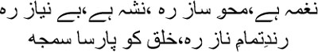
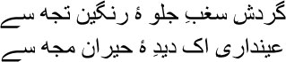
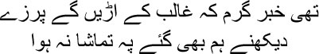
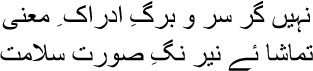

14

There’s music, float away on its currents
There’s wine, forget everything
There’s a beautiful girl, fall in love hopelessly
Piety is for others
 irza sahib, hey there Mirza sahib! Look, the old man is fast asleep. All these years in the grave haven’t taken away his ability to sleep. Or do you suppose he pretends to be asleep? It’s hard to read this old man, my brothers. Just like his ghazals—if you’re taken in by the appearance, you’ll never know what lies within. When the Momins and Zauqs were either repeating themselves ad nauseam about the moon and flowers and birds and ladies, or composing encomiums to the emperor, Mirza sahib arrived on the scene to breathe new life into the dead ghazal. How can an artist create such magnificent works? Such heights can be reached only when a person sets his own life on fire to keep the flames of his art alive. People like these are most unpredictable, you know, beyond comprehension; trying to gauge Mirza sahib with the measuring stick of our routine lives would be a grave error. At times the man will appear to be nothing but the devil. Maybe that is what he was, the devil, someone who can toy with his own life. I’m reminded of a funny story about Mirza sahib. None of his contemporaries could match him when it came to humour, but he would often turn his satire on himself. No, my brothers, don’t be annoyed, here’s the story. Please don’t imagine I’m making excuses for Mirza sahib. Who am I to make excuses for him? And besides, Mirza sahib’s life is nothing but a story now. Only his ghazals live; we’re wrong, my brothers, it’s very easy to defeat an artist in his lifetime, but the artist’s real life begins after his death, a life which not even the best efforts of people like Ibrahim Zauq can tarnish.
irza sahib, hey there Mirza sahib! Look, the old man is fast asleep. All these years in the grave haven’t taken away his ability to sleep. Or do you suppose he pretends to be asleep? It’s hard to read this old man, my brothers. Just like his ghazals—if you’re taken in by the appearance, you’ll never know what lies within. When the Momins and Zauqs were either repeating themselves ad nauseam about the moon and flowers and birds and ladies, or composing encomiums to the emperor, Mirza sahib arrived on the scene to breathe new life into the dead ghazal. How can an artist create such magnificent works? Such heights can be reached only when a person sets his own life on fire to keep the flames of his art alive. People like these are most unpredictable, you know, beyond comprehension; trying to gauge Mirza sahib with the measuring stick of our routine lives would be a grave error. At times the man will appear to be nothing but the devil. Maybe that is what he was, the devil, someone who can toy with his own life. I’m reminded of a funny story about Mirza sahib. None of his contemporaries could match him when it came to humour, but he would often turn his satire on himself. No, my brothers, don’t be annoyed, here’s the story. Please don’t imagine I’m making excuses for Mirza sahib. Who am I to make excuses for him? And besides, Mirza sahib’s life is nothing but a story now. Only his ghazals live; we’re wrong, my brothers, it’s very easy to defeat an artist in his lifetime, but the artist’s real life begins after his death, a life which not even the best efforts of people like Ibrahim Zauq can tarnish.
Now for the story. The room that Mirza sahib spent his entire day in was on the roof over the main entrance. On one side was a small, dark chamber. The door was very low, forcing people to stoop before entering. Mirza sahib used to sit on a sheet in this room from about ten in the morning till three or four in the afternoon. Sometimes he’d be alone, at other times he’d pass the afternoon with chausar—a game of dice—if he found someone to play against. It was the month of Ramzan. Maulana Arzuda arrived one afternoon. He was a great favourite of Mirza sahib’s. That particular afternoon Mirza sahib was playing chausar with a friend. Chausar in the month of Ramzan? This was a sin for the Maulana. He said, ‘I have read in the Hadith that the devil remains imprisoned in the month of Ramzan. I can no longer believe the Hadith.’
— Why not?
— Since you’re playing chausar, how do I believe the Hadith?
— Can’t you see the unshakeable truth of what the Hadith says? Mirza sahib smiled.
— What do you mean?
— The Hadith is absolutely right. The devil is indeed imprisoned in this chamber here, don’t you see? What do you think, mian? Directing the last question at his opponent, Mirza sahib burst out laughing.
— You’re calling yourself the devil?
— But of course. Without a devil like me how could you have been a priest?
— What do you mean?
— Is it so difficult to understand? It’s only because the devil exists that the Shariyat needs so many rules. I have told you so many times, Arzuda sahib, that I’m only half a Muslim. I drink, though I don’t touch pork.
I could have said something similar. A friend had once asked just how much of a Muslim I was. I’d answered, ‘I’ll cheer if Islamia College scores a goal against DAV College. That’s as far as my being a Muslim goes. No further.’
Let me tell you another story, my brothers. This is from the later years of Mirza sahib’s life. Dilli was in the grips of an epidemic of cholera. Mir Mehdi Husain Mazrooh wrote in a letter, ‘Has the epidemic fled from the city, Hazrat, or is it still raging?’ Mirza sahib answered, ‘I cannot understand what kind of epidemic this is. An epidemic that cannot kill an old man and an old woman of seventy needn’t have bothered.’
You or I will never be able to fathom this Mirza sahib. But a man does want to understand another. That’s where they go wrong. When a man cannot even understand himself—when all he can see is only the tip of the iceberg—isn’t the attempt to understand someone else laughable? Leave alone us, even a Sufi saint like Fariduddin Ittar could not fathom Omar Khayyam. Do you know why?
Khayyam sahib used to believe that there was no resurrection after death. Like the philosopher Ibn Sina, Khayyam sahib was convinced that the lord might understand the concept of fragrance, but the individual fragrances of each flower did not reach him. Ibn Sina used to say, there is no creator of the universe, such as Allah—it has always been and always will be. And Khayyam sahib wrote in one of his rubaiyats, since there is no place for me in the world, it would be a mistake to live without my lover and my wine. But how long can there be doubt over whether the universe was created or whether it has always existed? Questions like these will have no meaning after I die. So, the way Ittar sahib had pictured Khayyam sahib on Judgement Day had left no room for a devil like him at the court of the Lord. Why not? One of Khayyam sahib’s whores had asked as much to a shaikh. Imagine the temerity. The shaikh had told the whore, ‘You’re a drunkard, always busy deceiving people.’ The whore had answered, ‘I am indeed what you say I am, but are you what you think you are?’
Khayyam sahib had himself predicted what would happen after his death. Nizami sahib had become a disciple of his. The last time he saw Khayyam sahib was at a friend’s house in a lane of the slave market at Balkh. Many people were present to listen to Khayyam sahib talk. Apparently he had said, ‘I shall be buried where the trees shed their flowers twice a year.’ Nizami sahib hadn’t believed him. Four years after Khayyam sahib’s death, Nizami sahib visited his guru’s grave at Nishapur. When he saw the grave buried under flowers, he couldn’t keep himself from crying.
Pardon me for digressing, my brothers. The thing is, the story about Mirza sahib that I’m telling you is not his story alone. The lord made all of us from dust, after all. Consider, then, what ancient dust from distant lands and its memories we hold. I’m perpetually amused by the fact that we exist somewhere or the other eternally, concealed in the dust.
[Translator’s interpolation: Manto stops suddenly at this point. I am reproducing what he wrote on a page before resuming the story. I could easily have omitted it. But we would like to remain as faithful to the original as possible. Therefore I see no reason not to consider this statement of Manto’s part of the novel. I am putting down exactly what Manto wrote both within and without this story.]
Sometimes I wonder whether this really is turning out to be a novel about Ghalib’s life. I wasn’t in as much doubt before as I am now. But ever since I moved to Lahore I have been drinking so much more, and playing so many dirty tricks to keep body and soul together—not that I paid much attention to the household; you could say the dirty tricks are for self-preservation—that I have long since lost track of things. The film script I wrote about Mirza Ghalib was nothing but fraud, the whole world of films is fraud. They had wanted a story about Mirza Ghalib’s illicit relationship. So I wrote one for them. I used to write treatments and film scripts strictly for the money. But the Ghalib of my novel is like that man in Gogol’s ‘Overcoat’, whom I cannot quite pin down. So I read out what I had written to my wife. Ever since I moved to Lahore, I have had no one to read my stories to. Shafia Begum had to bear the brunt of it all.
— What do you think, Shafia? I asked.
— What do I know of literature? Shafia smiled. ‘Ismat would have understood.’
— But Ismat isn’t here. You have to tell me.
— Pardon my insolence, Manto sahib.
— Tell me.
— You’re imposing yourself on Mirza sahib.
— You think so?
— I do.
I had asked Begum a few more questions. She only kept repeating, ‘What do I know of literature? If Ismat were here …’ Ismat, Ismat, Ismat. The same name over and over. My greatest friend, my biggest enemy. She knew I was dying but she wouldn’t reply to my letters. I knew she had begun to loathe me for coming away to Pakistan. But Ismat was Ismat. Who else but she could write a story like ‘Lihaaf’—‘The Quilt’? What a lot of trouble it had led to! From the mullahs to the progressive, everyone had pounced on her. A story about homosexuality? And that too, between women? Ismat really had stirred up a hornet’s nest.
Eventually I summoned Mirza sahib and made him sit down with me.
— Kya mian? What do you want? Mirza sahib began to laugh.
— I’m writing a novel about you. May I read some of it to you? If you say it isn’t working at all, I’ll give up.
— Read it then. Is there anyone who doesn’t want to hear his own story?
When I finished, Mirza sahib began to pace up and down in the room. ‘What do you think?’ I asked him.
Still pacing up and down, Mirza sahib recited a sher:

You turn the goblet round and round to show me the
coloured patterns
I capture them in the mirror of my astonished,
bewildered eyes
Then he said, ‘Keep writing, Manto bhai. People cannot touch one another even in real life; it is futile to expect you to touch me through your story. Still, keep writing. Writing is the road to the Din.’
So there was a path to the Din even for me? Even after all my sins?
I was quite amused by this section of Manto’s novel. I told Tabassum that while I wasn’t going to be able to write a novel about Mirza Ghalib, I did want to write one about Manto.
— Why, janab? Tabassum asked with a smile
— I haven’t come across a bigger devil. Exploring a devil is a special joy.
— What do you consider yourself to be?
— What do you think?
— You tell me.
— It would have been easy if I knew. Just like Manto referred to everyone and everything as a fraud, I’m a fraud too. You could say writing is my business of fraud.
Back to Mirza sahib. He did not stay very long in his father-in-law Mahroof sahib’s house. For one thing he couldn’t stand his father-in-law; for another, he had begun to think of himself as a big shot after his arrival in Dilli. Yes, there was this streak in his character; as I said, he could never forget that he was descended from Turkish soldiers. The lofty disposition was in his blood. So he couldn’t bear to live in his father-in-law’s house. He rented Sabban Khan’s house next to Habash Khan ka Phatak at Chandni Chowk to live life the way he wanted to. Umrao Begum languished in the ladies’ chambers with her Quran and Hadith and Tasbi.
It must be admitted, friends, that Mirza sahib never really spared a glance for his wife. He was perpetually occupied with his ghazals and drinking and mushairas and courtesans and the good life. Do you suppose Umrao Begum never wanted to talk to her husband or be close to him? Certainly she did. But Mirza sahib’s neglect and cruelty were boundless. He slept with his wife—who gave birth to not one or two but seven children, none of whom lived beyond a year and a half—but he remained besotted with his lifestyle. I can understand why Umrao Begum gradually locked her life into the Quran, why she even segregated the utensils she ate out of. The birth and subsequent death of each successive child had pushed her ever deeper into the darkness within herself. Mirza sahib was not interested in paying attention to her. He made fun of her instead. On one occasion, he was determined to move to a different haveli, even inspecting it himself. Umrao Begum asked, ‘Did you like the house, Mirza sahib?’
— The diwankhana is fine. But I didn’t take a look at the zenana mahal.
— Why not?
— What use is it for me? It’s your mosque, you’d better take a look. Mirza sahib laughed.
— Mosque?
— Of course. You’ve turned the ladies’ chamber into a mosque. Don’t argue anymore, go and take a look for yourself.
Accepting her husband’s suggestion, Umrao Begum went to inspect the house. On her return Mirza sahib asked, ‘Well? Did you like it?’
— Yes. But …
— But what?
— Everyone’s saying there are spirits in that house.
— Who’s saying there are spirits?
— The neighbours.
— Have they seen you?
— Yes.
Mirza sahib burst into laughter. —Oh Begum, is there a more powerful spirit than you in the world?
What can a woman say when her husband speaks this way? Suppressing her tears, Umrao Begum returned to the ladies’ chamber. I cannot forgive this Mirza sahib, my brothers. Not that I could give Shafia Begum all that I should have as a husband, for I did as I pleased. But at least I never insulted her this way. Mirza sahib could humiliate people effortlessly, at least in his youth. Of course, if you hand out insults you must be prepared to face them too. However, he could not swallow humiliation. But don’t start judging Mirza sahib because of all this. Photographs are black-and-white, but life isn’t like that—there are shades of grey everywhere. And Mirza sahib’s life was much bigger than our daily grind; as they say, it was larger than life. You can criticize his life, you can raise questions about it, but you cannot but acknowledge his existence as he rolled and tumbled in a shark-infested ocean.
Mirza sahib had to swallow no small amount of humiliation in order to establish himself as a shair in Dilli. His ghazals and he himself were insulted at one mushaira after another. Why? Because connoisseurs of his writing had not yet been born; what could the dwarfed poets do to retaliate? They cast aspersions on the poetry, they stuck the label of incomprehensibility on it, they mocked it. Let me tell you what happened at one particular mushaira. The famous poets and the crème de la crème of Dilli were present. A succession of poets read out their ghazals. Cries of ‘kyabaat’ resounded, waves of applause rose in the air, but Mirza sahib could make out that the poetry was hollow, stuffed only with ornamentation, like women whose beauty was lost beneath an overdose of jewellery. When it was Mirza sahib’s turn to read, Agha Jan Aish, a doctor, stood up, saying, ‘I would like to say something before such a great shair reads his ghazals. I seek your permission.’
‘Please go ahead,’ a chorus rose in the air.
— Arz kiya hai?
— Ershad, ershad.
Agha Jan began to read,
Meaningless is the poetry that only the poet understands
You can enjoy it only when everyone gets it
I understand Mir, Mirza too, but whatever Ghalib writes,
God save him, only he knows whether anyone understands
There was a wave of laughter. Can a poet possibly read after this, my brothers?
Let me tell you what happened another time. Abdul Qadir, the maulvi of Rampur, arrived and said, ‘Mirza sahib, I simply cannot understand one of your Urdu shers. If you could explain.’
— Which sher, janab?
— The one where you wrote:
Take the fragrance of the rose
From the egg of the bull
There’s some more fragrance in there
Take it from the egg of the bull
— This isn’t my sher, Qadir sahib.
— But this is what I read in your diwan. Would you like to check?
Mirza sahib realized that this was a ploy to laugh about his poetry. But he did accept his friend Fazl-e-Haq’s criticism. You can hardly change an artist by attacking him. If you can tell him as a friend, if you’re equipped to speak on the subject, an artist will accept what you have to say. Mirza sahib changed the idiom of his poetry as a result of Fazl-e-Haq’s criticism. For, a friend’s criticism is not a joke, it is a hand of support. And Fazl-e-Haq understood the intricacies of the language of poetry. But did someone who wasn’t familiar with it have the right to criticize Mirza sahib’s ghazals? You have to be an expert to talk about physics or chemistry, but when it comes to poetry, how can you get by spouting any nonsense you want to? You cannot be entitled to pass judgement until you have studied how the language of poetry was created and how it evolved in history. Just because the poet has only a pen, while scientists are surrounded by an array of instruments, are you entitled to talk about poets carelessly? That was why Mirza sahib wrote in a sher after swallowing so much humiliation:

There were strong rumours that Ghalib would be massacred
I went to see too, but the show was called off
Mirza sahib had gone to Dilli full of hope. Soon he realized that his optimism would not bear fruit. There was no room for him at the royal court in Dilli. Alone in his diwankhana, he muttered, drunk:

Even if I never become worthy of understanding the meaning
May my eye for beauty in different forms never weaken